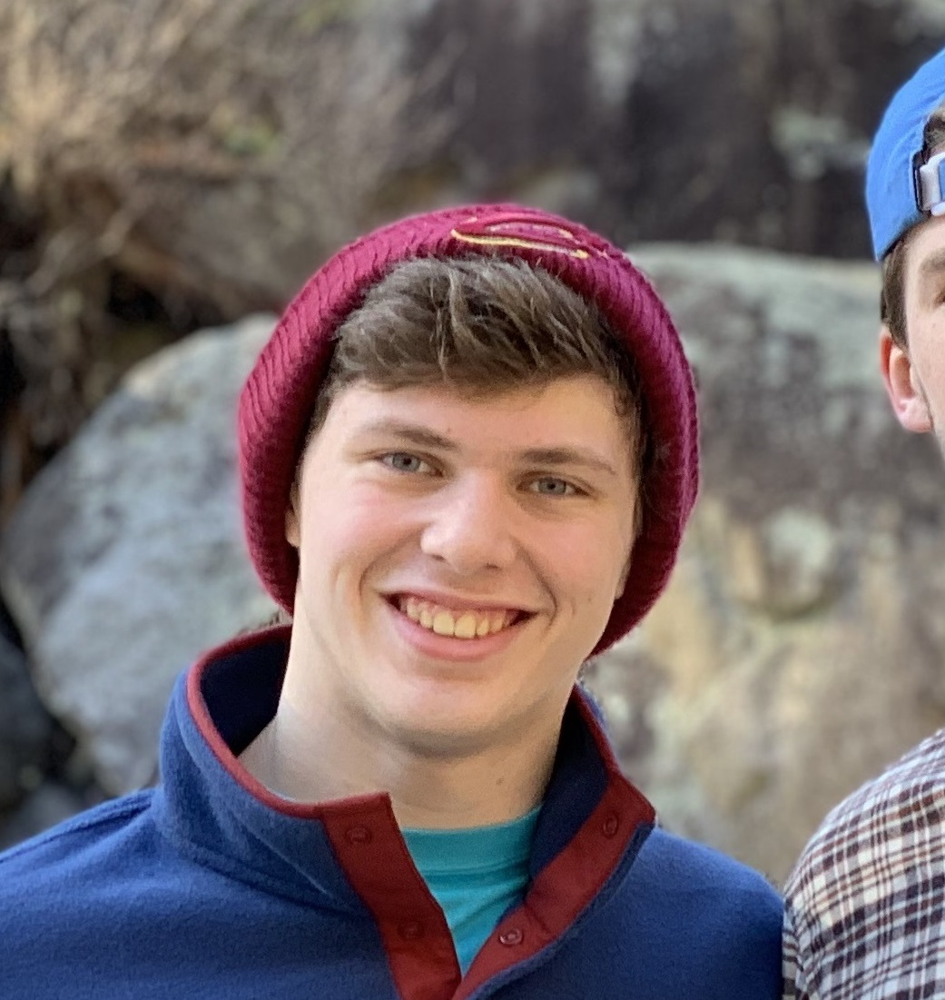
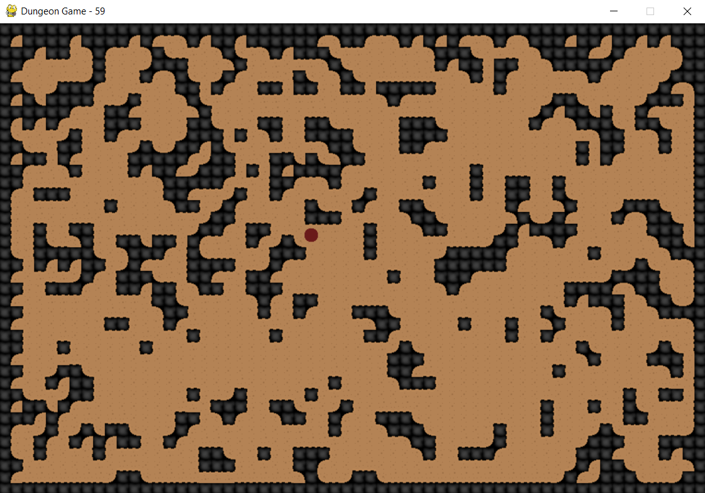
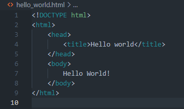

Nicholas Jefferis

Welcome to my E-Portfolio!
My name is Nicholas Jefferis. I am currently enrolled at the University of Cincinnati pursuing a Bachelor's of Science in Computer Science.
My coding career began in the 7th grade when my math teacher introduced me to creating programs on my TI-84 calculator. Since then I have worked
on projects across many fields of computer science and programming including game development, software development, and web design.
Projects
This is the first graphical game I created. Prior to this, I had created a text-based adventure game along with a few other projects,
but unfortunately have lost all record of their source code. As you can probably tell from the footage, I created all the assets for
this game. From this project, I learned about the basics of "animating" sprites, as well as concepts of hit boxes, collisions, and projectiles.
This was also my first exposure to the Python library "Pygame" which I would use for more small game projects in the future.
After making a few terrible side scrolling games, I decided I wanted to develop a rogue-like game featuring random world generation.
Since I was doing this without researching how other people develop random world (like using perlin noise), I used a modified version of
Conway's Game of Life to generate my worlds. I also created my own assets for the game. This project was never completed but I learned
a lot while working on it.


My first internship had me working on a project parallel to the development of our product's website. Prior to this internship, I had
absolutely no experience working in JavaScript or building websites. I decided what better way to learn about building a website than
to make one myself. This project morphed from a collage of my cats into this e-portfolio. I've been updating it as I gain experiences
and work on new projects. I have learned so much during this process.
Work History
Spring 2020
For my first co-op rotation, I joined Tenet3, a Department of Defense contractor. In this first semester I was a part of the Quality Assurance
team. In between developer code reviews and searching for bugs in our staging environments, I developed automated integration testing to verify
the functionality of our company's product. This exposed me to Selenium, Behave, Docker, and other tools and packages used in these tests.
This rotation was also my first experience working inside of a team using the Agile methodology in software development. I learned so much during
this first real-world work experience, and really enjoyed my time.
Fall 2020
My second rotation came in the Spring of Summer of 2020. I returned to Tenet3, the same company I worked for in my previous rotation. While I carried
much of the same expectations and work load of my first rotation, except I was also introduced to a new project. This project was in unfamiliar
territory; I was assigned to investigate a deprecated browser extension. With no experience with JavaScript or extensions, I struggled my way through
getting everyting up to date and running again. However with a little help from more experienced developers, I got it back functional, although still
production ready.
Summer 2021
For my third rotation, Summer of 2021, I once again returned to Tenet3. However, this time, I split my time between working as a developer and working
Quality Assurance. At this point, I took on the QA team's "scrum master" role. While not having defined titles, I planned our teams bi-weekly sprints
and wrote most of the issues and criteria to be worked on. In a team of mostly interns, I had the most experience with our automated integration tests
and understood the path of progressing them.